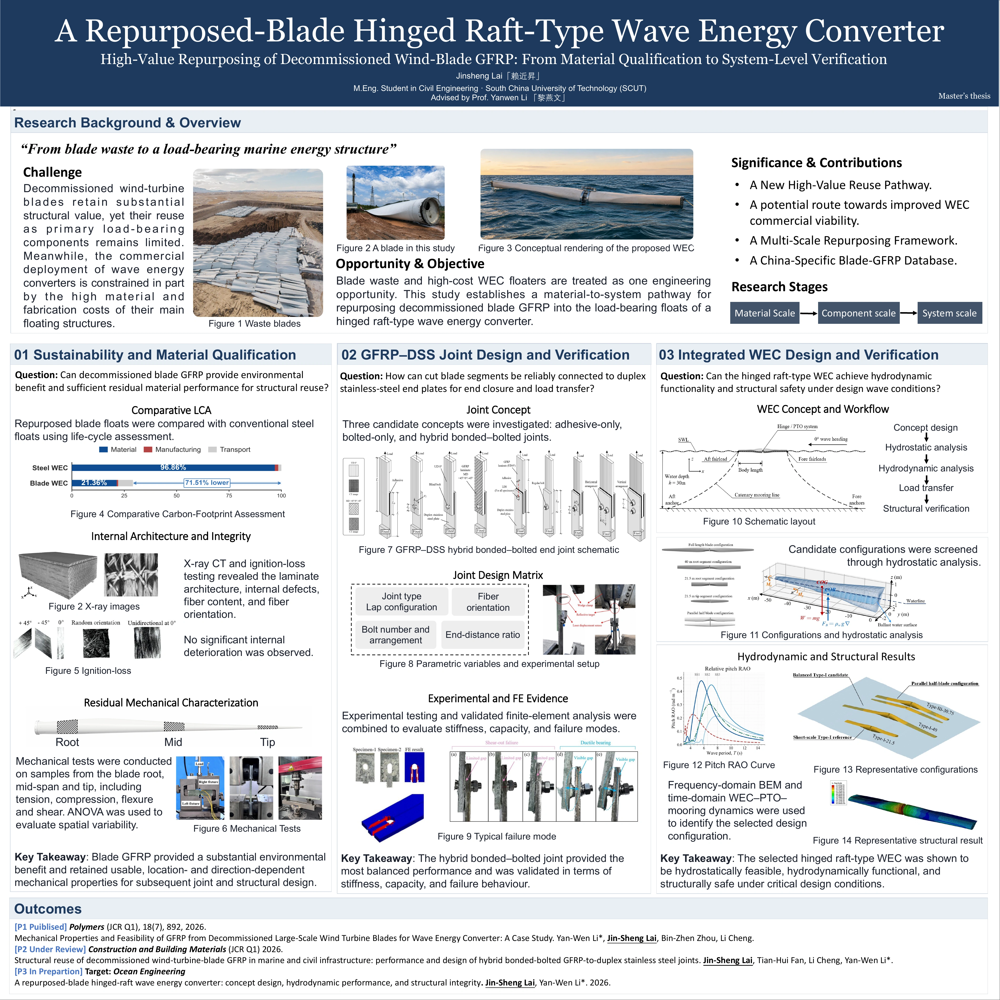

Jinsheng (Frank) Lai 「赖近昇」

I am a M.Eng. student in Civil Engineering at South China University of Technology, Guangzhou, China.
Research Interests: · Floating structures (floating offshore wind turbine platforms and wave energy converters) · Sustainable structural reuse (end-of-life composite structures) · Machine learning (application-oriented engineering use)
I am currently studying the fundamentals of computational mechanics, physics-informed neural networks (PINNs), and DeepONet.
I am seeking PhD positions for Fall 2027 intake.
Email: frankjslai@gmail.com
If my background and interests align with your group's research, I would be glad to hear from you—please feel free to reach out by email.
News
- [09/2026] Our paper, "Structural reuse of GFRP from decommissioned wind turbine blades: Mechanical behavior of HBB joints with duplex stainless steel", was accepted for publication in Construction and Building Materials. I am the first author of this paper.
- [07/2026] Completed the hydrodynamic analysis and load-transfer work for the P4 manuscript.
- [06/2026] Built an internal computing cluster for our research group and open-sourced the full setup workflow.
- [05/2026] My conference paper on deep reinforcement learning for offshore wind power operation and maintenance was accepted by ICEPET.
- [04/2026] Published a journal paper in Polymers on the performance of GFRP from decommissioned wind turbine blades for wave energy converters.
- [09/2024] Began M.Eng. study in Civil Engineering at South China University of Technology, advised by Yan-Wen Li. Admission with Entrance Exam Waived.
- [06/2024] Received Outstanding Graduate, Hainan University.
- [10/2023] Won First Prize in the National University Structural Design Information Technology Contest, China.
Education
M.Eng. in Civil Engineering, Sep. 2024-Expected Jun. 2027. GPA: 3.63/4.0. Admission with entrance exam waived.
B.Eng. in Civil Engineering, Sep. 2020-Jun. 2024. GPA: 3.61/4.0 (88.26/100).
Academic Poster of My Master's Thesis

Publications


[P2] Applications of Deep Reinforcement Learning in Optimization of Offshore Wind Power Operation and Maintenance.
Jin-Sheng Lai*. ICEPET, Accepted, 2026.
PDF | DOI | Abstract | BibTeX

[P3] Structural reuse of GFRP from decommissioned wind turbine blades: Mechanical behavior of HBB joints with duplex stainless steel.
Jin-Sheng Lai, Tian-Hui Fan, Li Cheng, Yan-Wen Li*.
Construction and Building Materials (JCR Q1, IF 8.9 [2025]), Accepted, 2026.
PDF | DOI | Abstract | BibTeX

[P4] Energy Capture Performance and Structural Feasibility of a Repurposed-Blade Hinged Raft-Type Wave Energy Converter.
Jin-Sheng Lai, Binzhen Zhou, Yan-Wen Li*, Pan Zou.
Energy, With Editor, 2026.
PDF | DOI | Abstract | BibTeX
Manuscripts in Preparation
[M1] Structural Modeling and Optimization of a 15MW CS-UHPC Composite Semi-Submersible Floating Wind Turbine Platform.
[M2] Non-measurement points in three-dimensional surface measurement: positional persistence, quantity–spatial representation and parameter response.
Research Experience

High-Value Repurposing of Decommissioned Wind Blade GFRP: Materials, Joints, and Marine Applications
- Executed mechanical characterization of 100+ repurposed-blade GFRP specimens and derived engineering design values via ANOVA and eigenvalue analysis; an LCA showed 71.5% lower carbon footprint and 37.4% lower structural mass than an all-steel wave energy converter.
- Proposed position-specific repurposing strategies based on tip/mid/root material property variations along the blade.
- Independently designed and tested hybrid bonded-bolted GFRP-duplex stainless steel lap joints; identified the adhesive layer as the governing failure mode with bolts providing redundancy; validated numerically using Abaqus FEA; manuscript accepted for publication in Construction and Building Materials.
- Established hydrostatic equilibria, robustly screened the Type-II minimum retained tip length, and projected BEM-derived hydrodynamic coefficients onto a 7-DOF hinged raft-type two-body model. Built a one-way coupled time-domain-to-FEA workflow incorporating nonlinear hydrostatics, quadratic drag, PTO and mooring loads, and transferred synchronized critical load states for structural assessment.
- Flume experiment (in progress) to validate the hinged raft-type two-body WEC model.

Structural Modeling and Optimization of a 15MW CS-UHPC Composite Semi-Submersible Floating Wind Turbine Platform
Responsible for the numerical modeling and computational analysis of a 15MW CS-UHPC composite semi-submersible platform. Establishing a time-domain fully coupled workflow in which OpenFAST provides aero-servo-elastic tower-base loads and ANSYS AQWA resolves platform hydrodynamics, motions, and mooring response, with platform kinematics and tower-base loads exchanged at each time step. The resulting tower-base forces and moments, fairlead tensions, platform motions, and distributed wet-surface hydrodynamic pressures are transferred to ANSYS Mechanical for finite-element stress, buckling, and structural optimization studies of the composite floating system.
OpenFAST, ANSYS AQWA, ANSYS Mechanical, Aero-Hydro-Servo-Elastic Coupling, Finite Element Analysis, Structural Optimization.
Modeling and Intelligent Operation and Maintenance of Offshore Wind Systems
Independently studied and implemented deep reinforcement learning from scratch, formulating offshore wind O&M as a Markov Decision Process with a hybrid state space (turbine health, environmental conditions, resource availability, and market signals) and a hybrid discrete-continuous action space. Trained and evaluated a DDPG agent on public and simulated data from a 20-turbine 5 MW offshore wind farm over a 3-year horizon: it outperformed DQN and PPO baselines in revenue, failure frequency, MTBF, and MTTR, and stayed robust under stressed conditions (wind-speed variance +20%, failure rate +15%). This work led to the ICEPET 2026 conference paper.
Python, PyTorch, DDPG, Markov decision process.

Environmental Sensitivity Analysis of a Floating Wind Turbine and Semi-submersible Foundation
Contributed to numerical modeling and environmental sensitivity analysis in ANSYS AQWA for a floating wind turbine and semi-submersible foundation. Assessed tower-base and tower-top motion responses across variations in wave height, wind speed, wave period, and wave-current incidence angle. The analysis identified wave height as the dominant driver of horizontal motion amplitudes, whereas wave period exerted a stronger influence on heave response.
ANSYS AQWA, Hydrodynamic Simulation, Environmental Sensitivity Analysis.

Compressive Response of 3D-Printed 2D Metamaterial Reinforced Composites with Diversified Geometries
Tested and evaluated the compressive behavior of 24 diverse 2D composite architectures, and proposed a comprehensive performance evaluation coefficient to screen for designs with superior specific energy absorption and specific strength.
3D Printing, Mechanical Testing.

Crack Recognition Based on Backpropagation Neural Networks
Engineered a Multi-Layer Perceptron neural network with optimized activation functions and cross-entropy loss with backpropagation for automated Structural Health Monitoring.
Python, Neural Networks.

Vibration Damping Performance Analysis of Graded Yield Metal Dampers in a Steel Frame Structure
Investigated the energy dissipation mechanism of graded yield metal dampers in steel frame structures through modal decomposition response spectrum analysis and elastic time-history analysis across minor, moderate, and major earthquake scenarios.
SAP2000, Seismic Analysis.

Flexural Property and Mechanism of Coir-FRP Seawater and Sea-Sand Concrete for Artificial Fish Reefs
Optimized coir-fiber-matrix compatibility through combined chemical modification, tested flexural strength, integrated a non-linear MATLAB prediction model, and used SEM analysis to study the fiber bridging toughening mechanism.
Lab Testing, MATLAB, SEM.
Skills
Vibe Coding Projects
Honors & Awards
- Outstanding Graduate, Hainan University, 2024.
- First Prize, National University Structural Design Information Technology Contest, China, 2023.
- First-Class Comprehensive Scholarship, Hainan University, 2021 and 2022.
- Meritorious Student, Hainan University, 2021 and 2022.